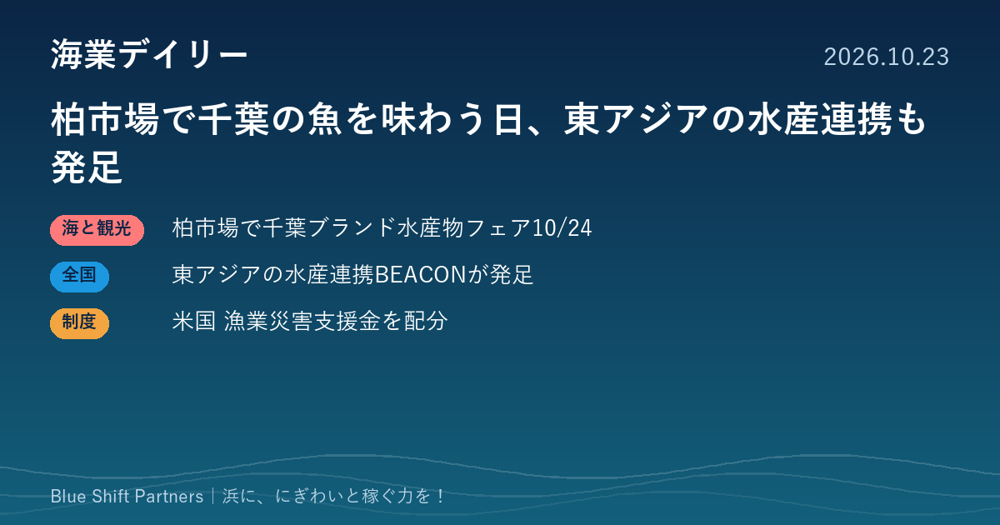

2026.10.23
柏市場で千葉の魚を味わう日、東アジアの水産連携も発足

本日は、あす10月24日に柏市の公設市場で開かれる「千葉ブランド水産物フェア」、東アジアの水産業のサステナビリティを進める新ネットワークの発足、米国の漁業災害支援金の配分の3件を取り上げます。産地の魚を消費地に届ける工夫と、浜を支える仕組みづくりの動きです。
千葉県、柏市場の一般開放デーで「千葉ブランド水産物フェア」 10月24日開催
千葉県水産課は、柏市公設総合地方卸売市場（柏市若柴）の「一般開放デー」と連携し、10月24日（土）午前8時30分から11時まで「千葉ブランド水産物フェア」を開きます。銚子つりきんめや江戸前船橋瞬〆すずき、外房イセエビなどの販売、大和寿司と晃市による銚子つりきんめなどを使った特別メニューの提供が予定されています。県水産課のブースでは、九十九里産いわしの加工品や房州ひじき、ちば海苔の試食（先着順・各250食）を行うほか、来年11月に千葉県で開かれる「第46回全国豊かな海づくり大会」のPRも行います。
ここがポイント：産地から離れた内陸の消費地で、市場の一般開放日に合わせて県産水産物を知ってもらう取り組みです。ブランド水産物の販路を広げたい漁協や加工業者にとって、既存のにぎわいイベントと組む売り込み方の参考になります。
出典：千葉県 農林水産部水産課「「千葉ブランド水産物フェア」を柏市で開催します！」（2026-10-14）
東アジアの水産業の持続可能性を進めるネットワーク「BEACON」が発足 日本からはシーフードレガシーが参加
株式会社シーフードレガシーは10月21日、同社を含む5組織による新しいネットワーク「BEACON（Blue East Asia Collaborative for Ocean Networks）」を発足させたと発表しました。発足は、同日のサステナブルシーフード・サミット（TSSS）の場で行われました。中国本土、香港、台湾、韓国、日本と関連する公海の漁業を対象に、持続可能な漁業と健全な海の実現に向けて、科学的根拠、水産物のサプライチェーンと市場、金融、漁業・養殖業の改善、生態系に配慮した漁業管理、モニタリングの6分野で協力するとしています。
ここがポイント：資源管理や水産物の流通をめぐる取り組みが、国や地域を越えて連携して進む動きです。認証水産物や資源管理の取り組みを販路づくりに生かしたい漁協・事業者は、こうした動向を押さえておくと商談の材料になります。
出典：株式会社シーフードレガシー（PR TIMES）「東アジアの水産業のサステナビリティを加速する新たなネットワーク、5組織が共同で発足」（2026-10-21）
米商務省、漁業災害の支援金1,580万ドルをフロリダ・カリフォルニアなどに配分
米国海洋大気庁（NOAA）は10月22日、商務省が漁業資源の災害に対する支援金として計1,580万ドルを配分したと発表しました。対象は、2022年のハリケーン・イアンの被害を受けたフロリダ州、2023/2024年漁期のアカウニ漁業の不振があったカリフォルニア州、トロール漁業とベニザケ漁業で被害が続いたワシントン州のマカー族です。資金は漁業者や遊漁船業者、陸上の関連施設などを対象に、直接支援、漁業関連インフラの整備、生息地の再生、職業訓練などに使えるとしています。
ここがポイント：漁獲の落ち込みを「災害」として認定し、漁業者だけでなく遊漁船業や陸上施設まで支援の対象に含めているのが特徴です。不漁や海洋環境の変化に向き合う日本の浜にとっても、支援の範囲をどう設計するかを考える材料になります。
出典：NOAA（アメリカ）「Commerce Department allocates $15.8M in fishery disaster funding to Fla., Calif., and Makah Tribe」（2026-10-22）
市場の一般開放日、国境を越えた資源管理の連携、不漁を支える公的支援。どれも、浜の魚の価値を守り、届け先を広げるための仕組みです。自分たちの浜の魚を「どこで、誰に、どんな場で」知ってもらうか、既にあるにぎわいの場と組めないか、一度洗い出してみてはいかがでしょうか。